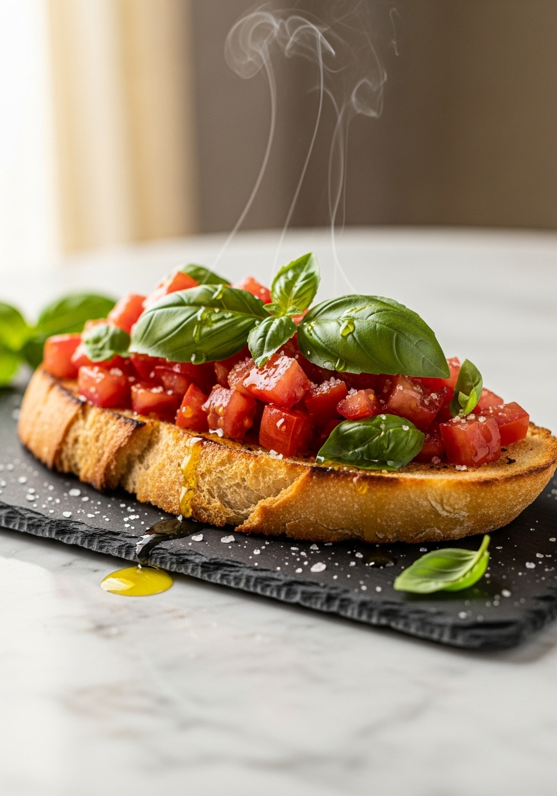
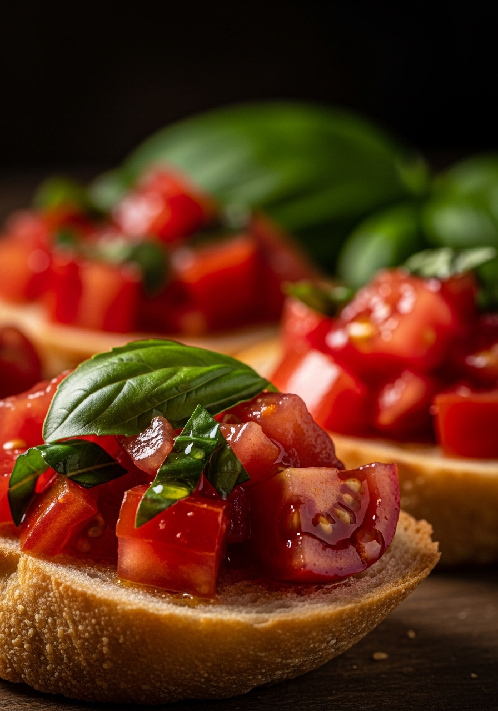

Pane casereccio tostato, aglio, pomodori maturi e olio extravergine d'oliva. L'antipasto italiano per eccellenza — pronto in 15 minuti.
La bruschetta nasce nella cucina povera del Centro Italia come modo di valorizzare il pane raffermo. La sua forza è nella qualità degli ingredienti: olio extravergine d'oliva di prima spremitura, pomodori veri e pane che abbia una struttura robusta. La parola "bruschetta" deriva dal dialetto romano "bruscare" — tostare sul fuoco. Il gesto della strofinatura con l'aglio ancora caldo è quello che la distingue da ogni altro crostino.
Il pane è la base: deve essere pane casereccio a lievitazione naturale, con crosta robusta e mollica compatta. Il pane da toast è inutilizzabile — si ammolla in secondi. Per i pomodori: San Marzano maturi in estate, Pachino o ciliegino in inverno. L'olio deve essere extravergine di qualità con un sapore fruttato e leggermente piccante.
Per 4 persone (8 bruschette) · 15 minuti totali

Il pane ideale è il pane casereccio a lievitazione naturale con crosta robusta e mollica compatta. Evita il pane morbido da toast. Il pane vecchio di un giorno è perfetto — è più asciutto e regge meglio.
I migliori sono i San Marzano maturi d'estate e i Pachino o ciliegino in inverno. Evita i pomodori acquosi e insipidi da supermercato.
Il condimento di pomodoro si prepara 30 minuti prima. Ma il pane va tostato e condito all'ultimo momento: la bruschetta si ammolla rapidamente e in 10 minuti non è più buona.
Il basilico contiene enzimi che a contatto con il ferro del coltello si ossidano, annerendo le foglie e alterando il profumo. Spezzarlo a mano mantiene il colore brillante intatto.
Tecnicamente sì, ma l'aglio strofinato sul pane caldo è ciò che la distingue da un semplice crostino. Il calore mitiga il sapore: resta un profumo sottile, non aggressivo.